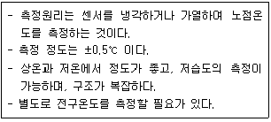
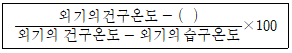
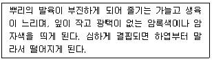
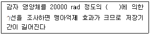

시설원예기사 (2022-03-05 기출문제)
1과목: 원예학개론
1. 여름철 노지에서 프리뮬러(Primula)가 고온피해를 입은 후, 물켜져 죽었다. 다음 설명 중 관계가 없는 것은?
- 질소 시비가 중요하다.
- 비기생 질병에서 유발된 현상이다.
- 여름에 시원하게 해주어야 피해를 줄일 수 있다.
- Phizoctonia 등의 곰팡이나 세균에 의해 곯아 죽은 것이다.
(정답률: 알수없음)

2. 다음 중 콩과(科)에 속하는 작물은?
- Lactuca satiua L.
- Capsicum annuum L.
- Allium cepa L.
- Pisum satiuum L.
(정답률: 알수없음)
3. 다음 중 영양번식에 비해 종자번식이 갖는 장점이라고 볼 수 없는 것은?
- 취급이 간편하다.
- 수송과 저장이 용이하다.
- 양친의 형질이 그대로 전달된다.
- 대량채종과 대량번식이 가능하다.
(정답률: 알수없음)
4. 다음 중 생장조절제 중 GA3의 억제제로 가장 강력한 것은?
- Paclobutrazol(Bonzi)
- Ancymidol(A-Rest)
- Chlormequat(Cycocel)
- Uniconazole(Sumagic)
(정답률: 알수없음)
5. 감나무(Diospyros kaki)에 대한 설명이 틀린 것은?
- 단일종으로 형질의 변이가 매우 크다.
- 완전 단감의 탈삽(脫澁)형질은 유전적으로 우성이다.
- 감속 식물의 기본염색체 수는 15개인데, 품종에 따라 배수성이 다르다.
- 완전 떫은 감은 종자가 형성되어도 갈반이 생기지 않으며 항상 떫은 감의 성질을 보인다.
(정답률: 알수없음)
6. 숙기조절법으로 온도조절과 화학물질의 이용이 있다. 그 중 포도의 숙기조절에 이용되는 화학물질은?
- GA
- 2, 4, 5-TP
- Atonik
- CCC
(정답률: 알수없음)
7. 우리나라 주요 채소의 분류에 대한 설명으로 옳지 않은 것은?
- 양채류는 우리나라 자생 채소 이외의 모든 채소를 포함한다.
- 고추의 경우 노지 건고추는 조미채소, 시설 풋고추는 과채류로 분류한다.
- 우리나라에서는 감자를 채소로 분류하지 않지만, 외국에서는 중요한 채소로 취급한다.
- 조미채소는 김치의 양념재료이며, 전통적으로 생산량과 가격이 시장경제에 미치는 영향이 컸다.
(정답률: 알수없음)
8. 과실구조에 따른 분류중 인과류(pomes, 仁果流)에 해당하지 않는 것은?
- 사과
- 자두
- 배
- 모과
(정답률: 알수없음)
9. 수확 후 절화 품질 및 수명을 증진시키기 위해 사용되는 절화보존제의 구성성분으로 알맞지 않은 것은?
- 당류
- 살균제
- 에틸렌
- 시토키닌
(정답률: 알수없음)
10. 과채류 중 손자덩굴에 주로 착과가 되는 것은?
- 오이
- 수박
- 참외
- 호박
(정답률: 알수없음)
11. 품종을 육성한 사람의 권리가 보호될 수 있도록 제도 및 운영관리를 하는 기관은?
- 한국육종학회
- 국제종자검사협회
- 국제식물검역인증원
- 국제식물신품종보호동맹
(정답률: 알수없음)
12. 광주성에 의한 식물분류 중 장일식물에 해당하는 것은?
- 포인세티아
- 맨드라미
- 백일홍
- 시클라멘
(정답률: 알수없음)
13. 다음 중 pH 4.8~5.4인 산성토양에서 잘 견디고 생육하는 작물은?
- 시금치
- 양배추
- 양파
- 감자
(정답률: 알수없음)
14. 꺾꽃이 번식의 장점이 아닌 것은?
- 종자번식에 비해 개화기까지의 기간이 단축된다.
- 같은 형질의 개체를 단기간에 번식시킬 수 있다.
- 겹꽃으로 결실하지 못하는 종류도 쉽게 번식시킬 수 있다.
- 종자번식에 비교하여 일반적으로 발육이 왕성하고 수명이 길다.
(정답률: 알수없음)
15. 수박의 인공수분을 시켜주어도 착과율이 떨어지는 경우가 있는데 그 원인 설명으로 틀린 것은?
- 수분 후 저온이 계속 될 경우
- 일조부족이 계속 될 경우
- 칼륨 및 인산을 많이 사용한 경우
- 씨방의 발육이 불량한 경우
(정답률: 알수없음)
16. 토양의 산도반응(pH)에 따라서 꽃 색깔이 변화는 화훼는?
- Tulip
- Azalea
- Begonia
- Hydrangea
(정답률: 알수없음)
17. 다음 구근류와 관련된 설명 중 옳지 않은 것은?
- 괴경을 부정형으로 disk가 있다.
- 괴근은 뿌리가 비대된 것이며 crown이 있다.
- 구경류는 대부분의 모구가 소실되고 신구가 형성된다.
- 인경은 잎이 변화된 것으로 모구가 소실되고 신구가 형성되는 것도 있다.
(정답률: 알수없음)
18. 다음 중 채소를 생태적 특성에 따라 분류한 것은?
- 엽채류, 근채류
- 인경채류, 양채류
- 가지과채소, 박과채소
- 호온성채소, 호냉성채소
(정답률: 알수없음)
19. 다음 개화 및 화아분화와 관련된 설명 중 옳은 것은?
- Kalanchoe는 20℃ 이상의 고온과 장일에서 개화가 촉진된다.
- 가재발선인장은 25℃ 이상의 고온과 장일에서 개화한다.
- Cineraria는 고온ㆍ장일에서 화아분화가 촉진된다.
- Stock은 13℃에서 일주일간 저온처리함으로서 화아분화가 촉진된다.
(정답률: 알수없음)
20. 종자휴면의 원인으로 간주할 수 없는 것은?
- 미숙된 배
- 투수성 종피
- 종피의 기계적 저항
- 산소를 통과시키지 않는 종피
(정답률: 알수없음)
2과목: 시설원예학
21. 다음 [보기]에서 설명하는 습도계는?

- 노접습도계
- 중량식습도계
- 전기저항습도계
- 서미스터센서습도계
(정답률: 알수없음)
22. 온실을 기본시설과 부대시설로 구분할 때 다음 중 부대시설에 해당되는 것은?
- 골조 및 피복
- 난방시설
- 커튼 개폐 장치
- 관수장치
(정답률: 알수없음)
23. 시설의 구조적 안정성 분석 시 응력해석이 필요하다. 설계 시 고려해야 할 응력에 해당하지 않는 것은?
- 기둥재응력
- 축방향응력
- 휨응력
- 전단응력
(정답률: 알수없음)
24. 다음은 온실의 기화냉각법에 의한 냉방효율을 계산하는 식이다. ()안에 알맞은 것은?

- 유입기온
- 실내습도
- 식물체온도
- 실내의 습구온도
(정답률: 알수없음)
25. 다음 중 시설재배 면적이 가장 큰 지역은?
- 경기도
- 충청남도
- 전라남도
- 경상남도
(정답률: 알수없음)
26. 토양 공극에서 모세관현상으로 보유되는 수분인 모관수의 pF범위는?
- pF 0~2.7
- pF 2.7~4.2
- pF 4.2~7.0
- pF 7.0~9.0
(정답률: 알수없음)
27. 온실 내 토양재배에서 원하는 부위에 소량의 물을 지속적으로 공급하여 토양 유실이 없고, 토양이 굳어지지 않으며 소량의 물을 넓은 면적에 효과적으로 관수할 수 있는 방법은?
- 고랑관수
- 살수관수
- 점적관수
- 저면관수
(정답률: 알수없음)
28. 양분의 결핍 밑 흡수 불균형으로 나타나는 생리장해 중 잘못 짝지어진 것은?
- 칼슘(Ca)결핍 : 토마토의 배꼽썩음병
- 붕소(B)결핍 : 오이의 잘록과
- 망간(Mn)결핍 : 멜론, 수박의 착과 절위 잎마름병
- 칼륨(K)결핍 : 토마토의 줄썩음병
(정답률: 알수없음)
29. 펠릿(pellet)하우스에 대한 설명으로 가장 적합한 것은?
- 공기를 단열 매체로 한 보온력 증대
- 온수를 이용한 피복재의 보온성 증대
- 효율적인 구조에 의한 자연 환기량 증대
- 발포폴리스틸렌 입자를 이용한 보온력 증대
(정답률: 알수없음)
30. 온실작물의 관수방법 중 수분을 공급하는 원리가 다른 것은?
- 모세관 매트식
- 스프링클러식
- ebb-and-flood식
- 물받침식
(정답률: 알수없음)
31. 공정 육묘장에서 플러그묘(Plug seedlings)를 생산하기 위해 자동파종기를 사용하게 되는데 이곳에 이용되는 용기는?
- 포트
- 트레이
- 연결포트
- 짜개포트
(정답률: 알수없음)
32. 온실 하중(荷重)의 흐름은 어떤 것이 이상적ㆍ합리적인가?
- 가능한 최단거리로서 복잡해야 하며, 구조재는 전단면이 유효하게 작용하도록 계획해야 한다.
- 가능한 최장거리로서 가벼워야 하며, 구조재는 1/2 단면만 유효하게 작용하도록 계획해야 한다.
- 가능한 최단거리로서 단순하여야 하며, 구조재는 전단면이 유효하게 작용하도록 계획해야 한다.
- 가능한 최장거리로서 단순하여야 하며, 구조재는 1/3 단면만 유효하게 작용하도록 계획해야 한다.
(정답률: 알수없음)
33. 식물의 광합성 효율이 높은 가시광선의 파장색은?
- 녹색광
- 적색광
- 자주색광
- 황색광
(정답률: 알수없음)
34. 미국 NASA가 중심이 되어 무중력상태에서 식물생장 특성을 연구하고 있다면 어떠한 재배시스템에 대한 연구인가?
- 식물공장
- 수경재배
- 양액재배
- 우주농업
(정답률: 알수없음)
35. 다음 설명의 증상은 고추의 어떤 요소 결핍 시 발생되는가?

- N
- P
- K
- S
(정답률: 알수없음)
36. 자동정식기로 재배포장에 정식하려면 어떤 상태의 묘가 가장 적합한가?
- 관행육묘방법에 의한 대묘
- 공정육묘방법에 의한 대묘
- 공정육묘방법에 의한 중묘
- 공정육묘방법에 의한 약묘
(정답률: 알수없음)
37. 플러그 육묘용 상토 자재 중 pH가 가장 높은 것은?
- 피트모스
- 펄라이트
- 버미큘라이트
- 마사토
(정답률: 알수없음)
38. 하우스 내 스팬의 길이가 2m인 단순보의 중앙에 집중하중 10kN이 작용할 때, 최대 휨모멘트의 크기는?
- 2kNㆍm
- 5kNㆍm
- 10kNㆍm
- 20kNㆍm
(정답률: 알수없음)
39. 온실 내 작물의 엽온, 체내수분, 색, 당도, 광합성, 증산량과 같은 정보를 계측하는 분야의 발전이 기대된다. 이러한 계측분야를 무엇이라 하는가?
- 요소계측
- 환경계측
- 시스템계측
- 생체정보계측
(정답률: 알수없음)
40. 40cm의 토층에 포장용수량(용적비)이 27%, 관수 직전 토양의 함수량(용적비)이 23% 일 때 근권 부위를 포장용수량의 상태로 보충할 경우 1회의 실제 관수량(R)은 약 얼마인가? (단, 관수량의 일부가 지하 및 지표에 유실될 것을 고려하여 관수 효율은 90%로 한다.)
- 17.7mm
- 18.7mm
- 19.7mm
- 20.7mm
(정답률: 알수없음)
3과목: 재배학원론
41. 화성유도 시 저온ㆍ장일이 필요한 식물의 저온이나 장일을 대신하여 사용하는 식물호르몬은?
- CCC
- 에틸렌
- 지베릴린
- ABA
(정답률: 알수없음)
42. 앞 작물의 그루터기를 그대로 남겨서 풍식과 수식을 경감시키는 농법은?
- 녹색 필름 멀칭
- 스터블 멀칭
- 볏짚 멀칭
- 투명 필름 멀칭
(정답률: 알수없음)
43. 고무나무와 같은 관상수목을 높은 곳에서 발근시켜 취목하는 영양번식 방법은?
- 삽목
- 분주
- 고취법
- 성토법
(정답률: 알수없음)
44. 작물의 수해에 대한 설명으로 옳은 것은?
- 수온이 높은 것이 낮은 것에 비하여 피해가 심하다.
- 유수가 정체수보다 다른 생육단계보다 침수에 약하다.
- 벼 분얼초기는 다른 생육단계보다 침수야 약하다.
- 화본과 목초, 옥수수는 침수에 약하다.
(정답률: 알수없음)
45. 우리나라 원산지인 작물로만 나열된 것은?
- 감, 인삼
- 벼, 참깨
- 담배, 감자
- 고구마, 옥수수
(정답률: 알수없음)
46. 다음 중 T/R율에 대한 설명으로 옳은 것은?
- 감자나 고구마의 경우 파종기나 이식가가 늦어질수록 T/R율이 작아진다.
- 일사가 적어지면 T/R율이 작아진다.
- 토양함수량이 감소하면 T/R율이 감소한다.
- 질소를 다량사용하면 T/R율이 작아진다.
(정답률: 알수없음)
47. 녹체춘화형 식물로만 나열된 것은?
- 완두, 잠두
- 봄무, 잠두
- 사리풀, 양배추
- 완두, 추파맥류
(정답률: 알수없음)
48. 노후답의 재배대책으로 가장 거리가 먼 것은?
- 저항성 품종을 선택한다.
- 조식재배를 한다.
- 무황산근 비료를 사용한다.
- 덧거름 중점의 시비를 한다.
(정답률: 알수없음)
49. 다음 중 땅속줄기(지하경)로 번식하는 작물은?
- 마늘
- 생강
- 토란
- 감자
(정답률: 알수없음)
50. 벼의 비료 3요소 흡수 비율로 옳은 것은?
- 질소 5 : 인산 1 : 칼륨 1
- 질소 3 : 인산 1 : 칼륨 3
- 질소 5 : 인산 2 : 칼륨 4
- 질소 4 : 인산 2 : 칼륨 5
(정답률: 알수없음)
51. 다음 중 작물의 주요온도에서 최적온도가 가장 낮은 작물은?
- 옥수수
- 완두
- 보리
- 벼
(정답률: 알수없음)
52. 순무의 착색에 관계하는 안토시안의 생성을 가장 조장하는 광파장은?
- 적생광
- 녹생광
- 적외선
- 자외선
(정답률: 알수없음)
53. 다음 중 단일식물에 해당하는 것으로만 나열된 것은?
- 양파, 상추
- 샐비어, 콩
- 시금치, 양귀비
- 아마, 감자
(정답률: 알수없음)
54. 다음 중 침수에 의한 피해가 가장 큰 벼의 생육 단계는?
- 분얼성기
- 최고분얼기
- 수잉기
- 고숙기
(정답률: 알수없음)
55. 등고선에 따라 수로를 내고, 임의의 장소로부터 월류하도록 하는 방법은?
- 등고선관개
- 보더관개
- 일류관개
- 고랑관개
(정답률: 알수없음)
56. 다음 중 식물학상 과실로 과실이 나출된 식물은?
- 벼
- 겉보리
- 쌀보리
- 귀이
(정답률: 알수없음)
57. 광합성에서 C4 작물에 속하지 않는 것은?
- 사탕수수
- 옥수수
- 벼
- 수수
(정답률: 알수없음)
58. 뿌림골을 만들고 그곳에 줄지어 종자를 뿌리는 방법은?
- 산파
- 점파
- 적파
- 조파
(정답률: 알수없음)
59. 식물체의 부위 중 내열성이 가장 약한 곳은?
- 완성엽(完成葉)
- 중심주(中心柱)
- 유엽(幼葉)
- 눈(芽)
(정답률: 알수없음)
60. ()에 알맞은 내용은?

- 13C
- 17C
- 60Co
- 52K
(정답률: 알수없음)
4과목: 작물생리학
61. 요수량(water repquirement)에 관한 설명 중 옳지 않은 것은?
- 생체 1kg을 생산하는 데 소요되는 수분향의 g수이다.
- 요수량이 적은 식물이 건조에 강하다.
- 생육 후기보다 생육 초기에 요수량이 크다.
- 바람이 심하고 공증습도가 낮을 때 요수량이 크다.
(정답률: 알수없음)
62. 다당류가 단당류를 거쳐 피루브산으로 되고 이것이 산화되어 고분자 에너지 화합물인 ATP를 형성하는 대사 작용은?
- 크렙스 회로(Kreb's cycle)
- 광인산화(Photophosphorylation)
- 블랙먼(Blackman) 반응
- 힐(Hill) 반응
(정답률: 알수없음)
63. 피토크롬(Phytochrome)에 대한 설명으로 가장 적당한 것은?
- 일장반응으로 생성되는 개화촉진물이다.
- 저온 감응시에 생성되는 춘화물질이다.
- 광합성 명반응을 일으키는 식물의 색소체이다.
- 광발아성 종자에서 적생광과 원적색광의 가역반응을 일으키는 광수용단백질이다.
(정답률: 알수없음)
64. 식물세포의 엽록체 내 틸라코이드(Thylakoid)의 4가지 중요한 복합체가 아닌 것은?
- stroma
- photosystem Ⅰ
- ATP synthase
- photosystem Ⅱ
(정답률: 알수없음)
65. 광으로부터 유기되어 공변세포에서 기공의 개폐현상에 관여하는 이온은?
- Na+
- K+
- Ca2+
- Mg2+
(정답률: 알수없음)
66. 주로 잎에 집적되어 식물체 내의 이동이 비교적 어렵고, 세포막을 단단하게 하며, 토양미생물의 번식을 촉진 시키는 원소는?
- S
- Mg
- Ca
- Fe
(정답률: 알수없음)
67. 종자가 형성되지 않아도 착과하여 과실이 정상적으로 비대되는 현상을 무엇이라 하는가?
- 수분
- 수정
- 춘화
- 단위결과
(정답률: 알수없음)
68. Glucose 1분자가 glycolysis 과정에서 분해되면서 생성되는 ATP의 총 수는?
- 8
- 38
- 678
- 686
(정답률: 알수없음)
69. 식물의 조직이 저온에서 얼게 되는 성질 즉 내동성(耐凍性)에 관계되는 내적 조건에 해당되지 않는 것은?
- 식물체 내의 함수량
- 친수 콜로이드
- 통기조직의 발달
- 황화수소기의 함량
(정답률: 알수없음)
70. 잎에 있는 기공의 작용에 관하여 적절하게 표한한 것이 아닌 것은?
- 광합성과는 관계가 있다.
- 공변세포에는 엽록소가 있다.
- 보통 잎의 표면에 기공이 더 많다.
- 공변세포가 있어서 개폐에 영향을 미친다.
(정답률: 알수없음)
71. 작물개화와 관련된 춘화현상은 어떤 환경요인에 의한 현상인가?
- 광질
- 광도
- 온도
- 미네랄
(정답률: 알수없음)
72. 다음 색소 중 세포액 속에 물에 녹아 있는 상태로 존재하는 것은?
- Xanthopyll
- Carotene
- Lycopene
- Anthocyanin
(정답률: 알수없음)
73. 다음 중 광합성의 명반응과 관계없는 것은?
- 물의 광분해
- 전자의 발달
- 광인산화
- 이산화탄소의 고정
(정답률: 알수없음)
74. 식물의 토양 양분 흡수에 관계되는 요인이 아닌 것은?
- 뿌리의 차단
- 접촉치환
- 확산
- 토양 C/N율
(정답률: 알수없음)
75. 단위결과(單爲結果, parthenocarpy)를 나타내는 가장 정확한 표현은?
- 씨가 없이도 자랄 수 있는 능력을 의미한다.
- 수정 없이 열매만 자라나는 것을 의미한다.
- 과실 성숙 도중 씨가 퇴화하여 씨 없는 과실이 되는 것을 의미한다.
- 당대에 고정된 유전 인자를 지니게 되는 과실을 의미한다.
(정답률: 알수없음)
76. 콩과작물의 근류에 있는 레그헤모글로빈(leghemoglobin)의 주요 기능은?
- 산소 운반
- 질소 흡수
- 전자 전달
- 질소 환원
(정답률: 알수없음)
77. 식물체내에서 자연 발생하는 식물호르몬 중 시토키닌(cytokinin)의 역할에 해당되지 않는 것은?
- 핵산의 합성
- 노화억제
- 종자발아 촉진
- 과실성숙 촉진
(정답률: 알수없음)
78. 침윤종자나 생장 중인 식물에 저온처리를 하여 개화가 유기ㆍ촉진되는 작용에 대한 설명으로 옳은 것은?
- 저온처리 효과를 지속시키기 위해서는 산소 공급을 억제해야 한다.
- 탄수화물 함량이 적어야만 춘화처리 효과가 크다.
- 배양액 중 칼리가 함유되어 있으면 춘화처리 효과가 작다.
- 추파성이 높은 품종은 저온처리를 오래 해야 출수(벼과 식물의 이삭이 나옴)한다.
(정답률: 알수없음)
79. 과채류에서 착과 과정이 순서대로 옳은 것은?
- 종자형성→수분→수정→착과
- 수분→수정→종자형성→착과
- 수정→종자형성→수분→착과
- 수정→수분→착과→종자형성
(정답률: 알수없음)
80. 수분의 삼투퍼텐셜은 용질이 첨가됨에 따라 생기는데 30℃에서 2.0mol 포도당 용액의 삼투퍼텐셜(MPa)은 얼마인가? (단, 소수점 3자리에서 반올림한다.)
- -2.52
- -3.07
- -4.38
- -5.04
(정답률: 알수없음)
5과목: 수경재배학
81. 배양액에 포함된 이온의 농도를 나타내는 단위로 적합하지 않은 것은?
- me/L
- mg
- ppm
- mM/L
(정답률: 알수없음)
82. 수정재배의 성립조건으로 가장 거리가 먼 것은?
- 양질의 물을 다량 확보해야 한다.
- 수경재배용 육묘시설이 필요하다.
- 재배 온실 내 보광 기술이 필요하다.
- 양액의 급배액 관리 기술이 필요하다.
(정답률: 알수없음)
83. pH에 대한 설명으로 옳지 않은 것은?
- 용액에 해리된 수소이온의 강도이다.
- 해리된 강도는 pH이고, 해리될 양은 석회소요량으로 알아낼 수 있다.
- pH는 지시약이나 pH meter를 이용하여 측정할 수 있다.
- pH meter는 수소이온 농도차이를 저항의 차이로 감지한다.
(정답률: 알수없음)
84. 배양액의 용존산소에 대한 설명으로 옳지 않은 것은?
- 배양액온도가 상승하면 용존산소 농도가 낮아진다.
- 미생물의 활동도 용존산소농도에 영향을 준다.
- 토마토 재배 시 용존산소농도의 저하는 배꼽썩음병 발생과 연관된다.
- 담액식 수경재배가 고형배지경 보다 산소 조건이 좋다.
(정답률: 알수없음)
85. 담액수경의 장점이 아닌 것은?
- 근권의 온도변화가 적다.
- 뿌리에 대한 산소공급이 많다.
- 배양액의 농도 등이 안정하고 교정하기 쉽다.
- 순환펌프가 고장 나도 식물이 쉽게 피해를 입지 않는다.
(정답률: 알수없음)
86. 암면(Rockwool)의 지름과 성형 밀도로 가장 적합한 것은?
- 지름 : 1~2㎛, 밀도 : 80~160kg/m3
- 지름 : 2~3㎛, 밀도 : 20~60kg/m3
- 지름 : 3~10㎛, 밀도 : 80~160kg/m3
- 지름 : 60~120㎛, 밀도 : 80~160kg/m3
(정답률: 알수없음)
87. 시설 내에서 수경재배로 수확된 완숙 토마토의 자동선별기의 보편적인 선별 기준은?
- 색상
- 부피
- 무게
- 형태
(정답률: 알수없음)
88. 수경재배용 배양액 조성 시 질산칼륨(KNO3)의 1mg이 물 1L에 녹아 있을 때 질산칼륨의 농도를 바르게 나타낸 것은?
- K, NO3-N 각각 1ppm
- K, NO3-N 각각 1,000 ppm
- KNO3 1ppm
- KNO3 1,000 ppm
(정답률: 알수없음)
89. 박막수경(NFT) 재배방식의 장ㆍ단점에 해당하지 않는 것은?
- 배양액을 계속적으로 순환시키므로 비료나 물의 손실이 적다.
- 배드의 배양액량이 적기 때문에 배양액의 온도가 기온에 영향을 받기 쉽다.
- 설비와 관리 작업은 간단하지만, 배양액의 급액간격이나 급액량의 조절이 간단하지 않다.
- 장점으로 관상식물에 대해서 침투성 살균제, 살충제를 배양액에 넣어 간단히 병충해를 방제할 수 있다.
(정답률: 알수없음)
90. 수경재배용 양액의 구비 조건으로 가장 거리가 먼 것은?
- 필수 무기양분을 함유할 것
- 뿌리 흡수가 용이한 이온 상태일 것
- 양액의 pH가 5.5~6.5 범위일 것
- 재배기간 중 EC의 변화가 작을 것
(정답률: 알수없음)
91. 다음 중 배양액의 급액 방법으로 가장 저렴하고 간단한 제어 방법은?
- 중량 제어법
- 전극 제어법
- 타이머 제어법
- 적산일사량 제어법
(정답률: 알수없음)
92. 수경재배 배지의 직접적인 수분관리에 사용되는 센서가 아닌 것은?
- 수분장력 센서
- TDR 센서
- 로드셀
- 일사량 센서
(정답률: 알수없음)
93. 수경재배 시 급액조절법에 대한 설명으로 옳지 않은 것은?
- 전극법은 배액의 EC와 pH를 측정하여 급액을 조절하는 방법이다.
- 중량법에 의한 제어는 베드나 배액의 중량을 측정하거나 배액의 압력으로 급액량을 조절하는 방법이다.
- 증발산량 모델에 의한 제어는 작물의 종류별, 생육단계별, 기상환경별 예측 증발산량에 대한 모델에 따라 제어하는 방법이다.
- 일사량에 의한 컴퓨터 제어는 작물의 흡수량과 일사량의 밀접한 관계를 이용하여 하루 일사량의 변화에 따라 일정 적산일사량에 도달하면 급액된다.
(정답률: 알수없음)
94. 다음 중 실제 양액재배용으로 비교적 많이 이용되는 양액은?
- Sachs액
- 한국원시액
- Knop액
- Pfeffer액
(정답률: 알수없음)
95. 어느 수경재배농가가 사용하는 MgSO4ㆍ7H2O에는 Mg, SO4 및 H2O 이외의 특정 물질이 과다하게 함유되지 않았는데, 이 비료의 포장지에 순도(purity) 48%라고 쓰여 있다면, 이것이 의미하는 바를 가장 잘 설명하는 것은?
- MgSO4ㆍ7H2O 중 MgSO4가 차지하는 비중이 48%이다.
- MgSO4ㆍ7H2O 중 Mg가 차지하는 비중이 48%이다.
- MgSO4ㆍ7H2O 중 SO4가 차지하는 비중이 48%이다.
- MgSO4ㆍ7H2O 중에는 Mg, SO4, 또는 H2O 이외에 비료의 조제상 필요한 물질이 52%가 포함되어 있다.
(정답률: 알수없음)
96. 다음 중 배지경 사용 시 수분함량을 측정할 수 있는 장비로서 배지와 측정기 사이의 수분포텐셜의 차이에 의해 생기는 압력을 이용하는 것은?
- Load cell
- FDR
- TDR
- Tensiometer
(정답률: 알수없음)
97. 암면응 이용하는 고형배지경에 널리 사용되는 관수 방법은?
- 살수관수
- 분수관수
- 저면관수
- 점적관수
(정답률: 알수없음)
98. 수경재배에서 사용되는 물의 수질에 대한 설명으로 옳지 않은 것은?
- 수질 내 중탄산이 고농도로 존재할 때 H+이온이 증가한다.
- 중탄산 농도가 200ppm으로 높을 때는 중화하는 것이 좋다.
- 살균에 사용된 염소 농도가 높은 수돗물을 즉시 사용하면 뿌리에 장해를 일으킬 수 있다.
- 산화철은 점적관수 시 노즐을 막히게 하는 원인이 된다.
(정답률: 알수없음)
99. 배양액 관리 시 수위조절을 위해 이용되는 장치가 아닌 것은?
- 초음파센서
- 릭 엔드 피니언
- 저항값을 이용한 정전용량식 센서
- 접점 이용을 통한 플로트레스 스위치(floatless switch)
(정답률: 알수없음)
100. 다음 양액의 급액과 배액 관리에 대한 설명 중 옳지 않은 것은?
- 증산량이 많은 경우는 급액 횟수를 줄인다.
- 일출 1시간 전에 급액을 하는 것은 광합성에 도움이 된다.
- 여름에는 다른 계절에 비해 배액이 많도록 급액한다.
- 고형배지에 급액하는 경우 급액량이 같다면 급액횟수를 늘리면서 1회 급액량을 저게 하는 것이 좋다.
(정답률: 알수없음)
질소는 식물의 생장과 발달에 매우 중요한 영양소이며, 프리뮬러도 예외가 아니다. 따라서 질소 시비가 중요하다.